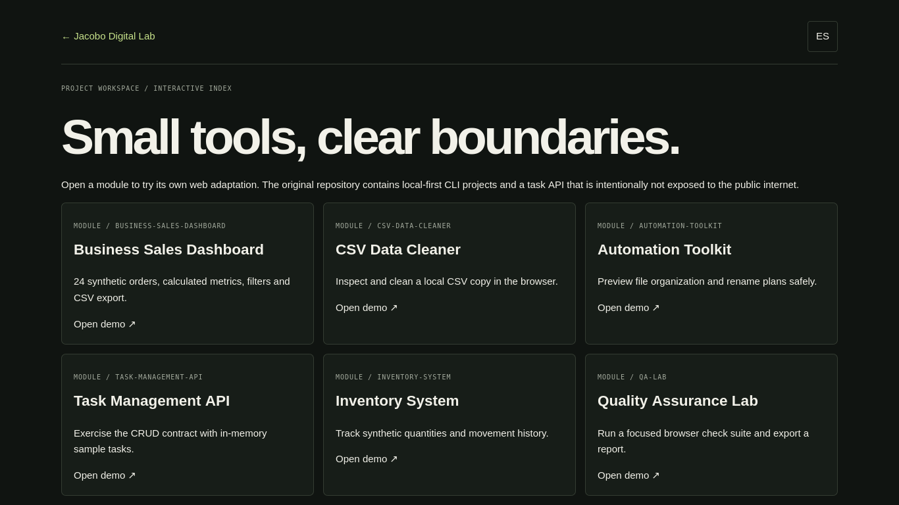

PROJECT CASE STUDY
REMOTECAREER-LAB
An interactive index of the workspace
Choose a module to open its own web demonstration. The source workspace also contains local CLI and API exercises that are not exposed as public services.

Open live demo ↗01 / PROBLEM
Problem: make a multi-project learning workspace easier to inspect.
02 / OBJECTIVE
Objective: connect each verified module to an appropriate browser demonstration.
03 / SOLUTION
Solution: an index linking to project-specific demos.
04 / ARCHITECTURE
Architecture: static routes in the portfolio deployment, with no cross-project database.
05 / IMPLEMENTATION
Implementation: module finder, feature summaries and direct demo/source links.
06 / TESTING
Testing: each linked demo is exercised separately.
07 / LIMITATIONS & ROADMAP
Limitations & roadmap: this does not expose the original local Task API; the browser sandbox is a contract exercise.
08 / ACCESS
Access: demo index, source repository and technical notes.